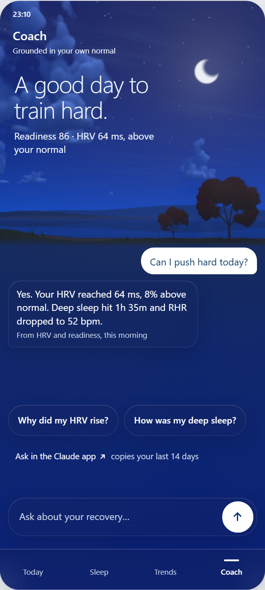
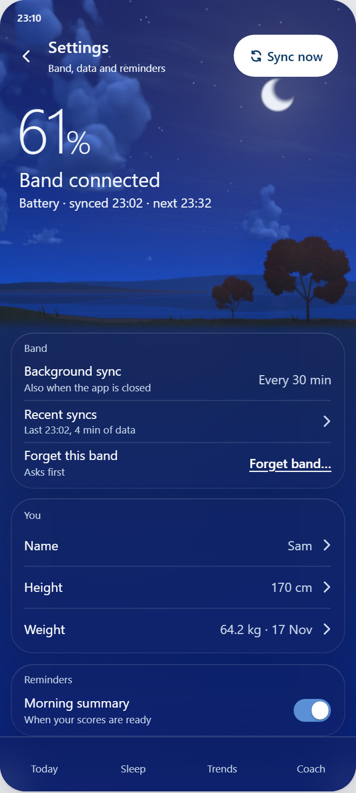
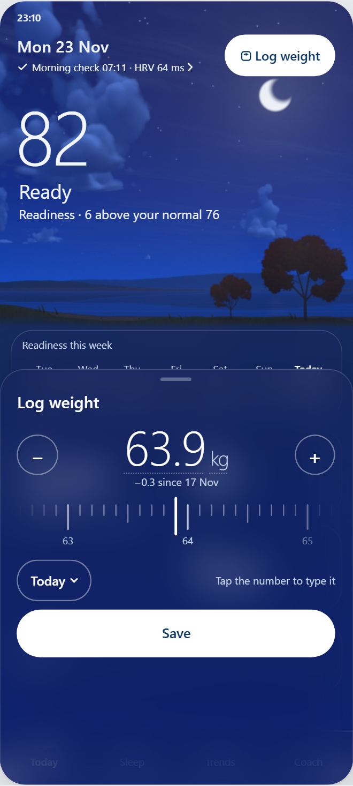
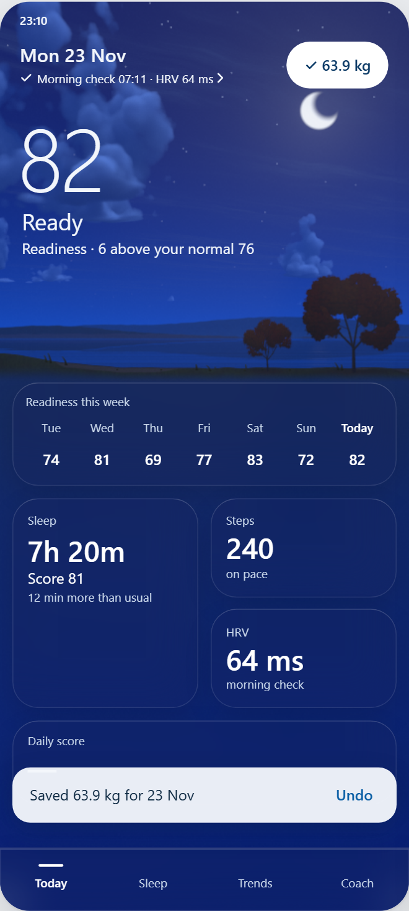
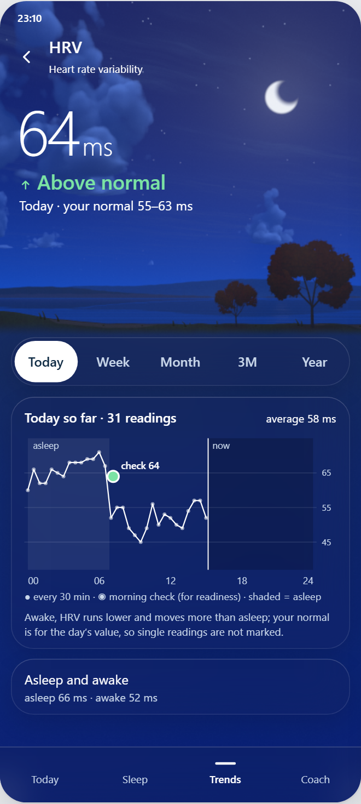
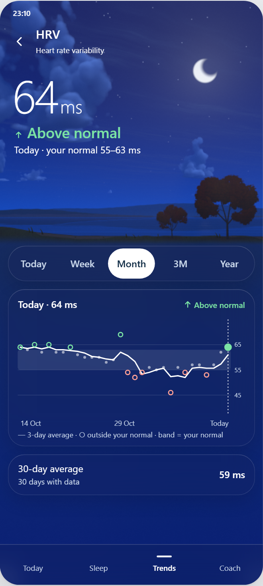

Coach, Settings, Log weight and a metric's page were drawn by day only. Here each picked design at 23:10 (fair), on the night glass of G2: the land's own hue under the cards (#152256 at 22%), light ink, white buttons with dark ink, TR2's night green and coral. Nothing new in the layout; each board now takes ?night=1 (shared night.js), so the night is the same page, not a copy.
One rule found: at night, sky text must stay left of the moon (x ≤ 262, as in S1). Coach's sentence box reached x 380 and needed a 37% veil; kept to x 262 it wraps to two lines and needs none. Settings' detail line was shortened at night for the same reason.
| Measured at 23:10 (g2.js, nt1/measure.json, floor 3.0) | contrast |
|---|---|
| Glass text, weakest (cards, sheets and nav areas of all four screens) | 6.96 |
| Sky text and numbers, light ink, no veil | 4.11 |
| White button vs the sky (Log weight, Sync now) | 8.62 |
| Night green / coral on the card (TR2) | 8.78 / 7.04 |





